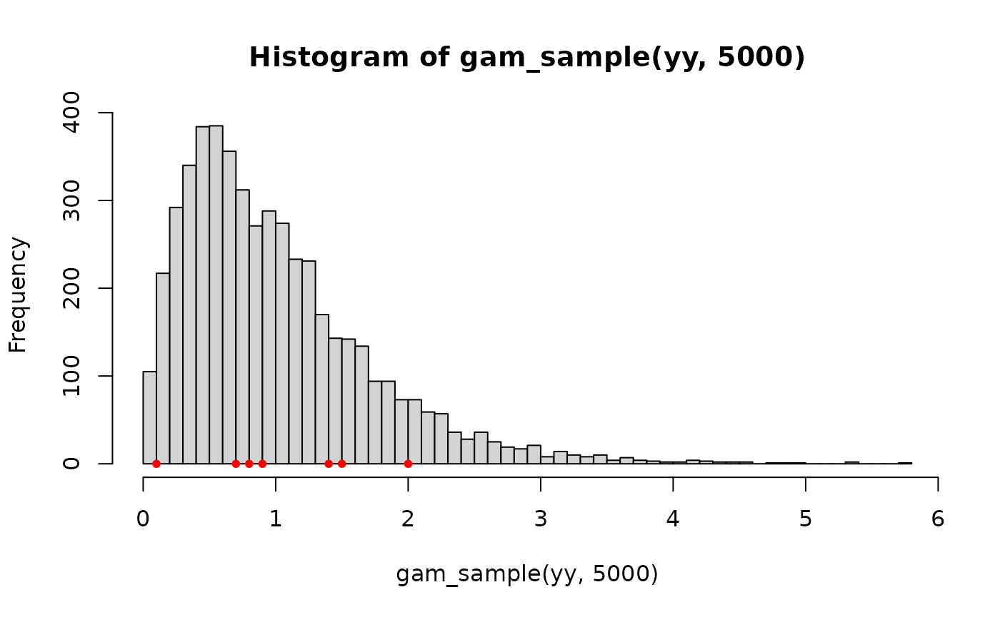
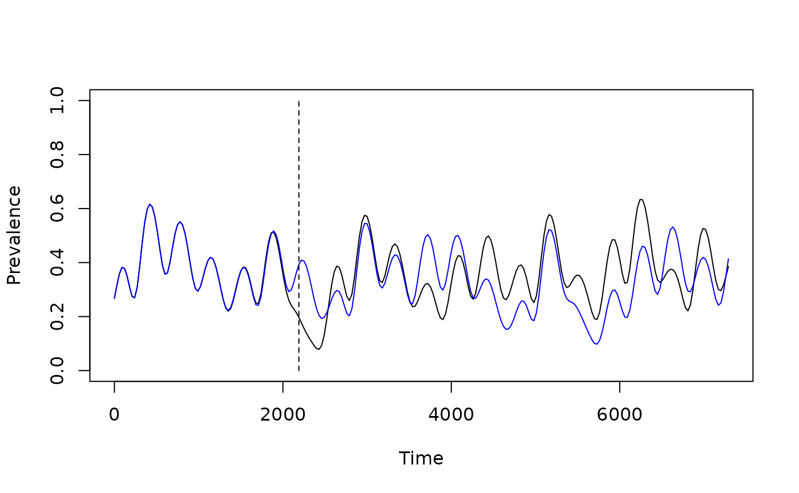

Forecast.Rmd
suppressMessages(library(viridis))
suppressMessages(library(ramp.work))
#devtools::load_all()We set up a model with inter-annual variability over a five-year period:
mod1 <- xds_setup_cohort(
eir = 2/365,
season_par = makepar_F_sin(bottom=.1),
trend_par = makepar_F_spline(tt=365*(0:6), yy=c(.7, 2, 1.5, .9, .8, 1.4, .1))
)
tt <- seq(0, 365*6, by = 30)
mod1 <- xds_solve_cohort(mod1, times=tt)
mod1 <- last_to_inits(mod1)
mod1 <- xds_solve_cohort(mod1, times=tt)
xds_plot_PR(mod1)The last knot does not have much of an effect on the shape in the plot above, but it’s not like the other points.
If we run the model for the next four years, we get a runaway trend.
tt <- seq(0, 365*10, by = 30)
mod1 <- xds_solve_cohort(mod1, times=tt)
xds_plot_PR(mod1)If we want to use the model to forecast a few years ahead, we need to
add knots. To do this, a gamma distribution with mean 1 is fit to the
knots, and we sub-sample from it. The function is called
gam_sample:
yy <- mod1$EIRpar$trend_par$yy
hist(gam_sample(yy, 5000),55)
points(yy, yy*0, pch = 20, col = "red")
The functions forecast_spline_EIR and
forecast_spline_Lambda do this for
years ahead. The forecasting function allows us to exclude the last
x_last knots when we sub-sample:
mod1a <- forecast_spline_EIR(mod1, 5, x_last=1)
mod1a <- xds_solve_cohort(mod1a, times=tt)
clrs <- viridis::turbo(8)
xds_plot_PR(mod1a)
for(i in 1:8){
mod1b <- forecast_spline_EIR(mod1, 5, x_last=1)
mod1b <- xds_solve_cohort(mod1b, times=tt)
xds_plot_PR(mod1b, add=TRUE, clrs = clrs[i])
}
xds_plot_PR(mod1a, add=TRUE, clrs = "black")
segments(5*365, 0, 5*365, 1, lty = 2)
mod1c <- forecast_spline_EIR(mod1, 15, x_last=1)
tt <- seq(0, 365*20, by = 30)
mod1c <- xds_solve_cohort(mod1c, times=tt)
xds_plot_PR(mod1c)
segments(5*365, 0, 5*365, 1, lty = 2)Without the exclusion, the last knot can have a serious effect on our forecast. We should leave it in if it’s real, but if it doesn’t have any real information, it might be best to leave it out.
mod1a <- forecast_spline_EIR(mod1, 15)
mod1b <- forecast_spline_EIR(mod1, 15, x_last=1)
mod1a <- xds_solve_cohort(mod1a, times=tt)
mod1b <- xds_solve_cohort(mod1b, times=tt)
xds_plot_PR(mod1a)
xds_plot_PR(mod1b, add=TRUE, clrs = "blue")
segments(6*365, 0, 6*365, 1, lty = 2)